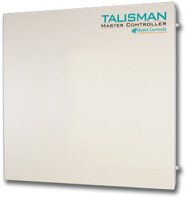
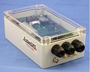
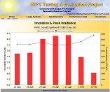
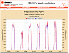

In 2012 we worked with Quest Controls Inc. on their new Talisman products, a Linux based building management controller. We worked on the web interface, web server, developed a JSON backed back-end API and added enhancements to the BACnet stack and helped implement the production manufacturing tests.

We have worked with Farallon Electronics since 2009 to design three generations of their Istar marine GPS products. Using a CPU module from Rabbit Semiconductor and a custom base board this product features a best in class GPS module, Ethernet, serial and digital I/O and an AJAX web based interface. In 2011 a special customized version was developed for the America's Cup race and is deployed on top raching yachts around the world.

In 2004 we worked with The Internet:Works to develop a solar monitoring system for the Public Interest Energy Research project. We developed a system to benchmark the performance of a number of solar installations in Davis and Chino, CA. We developed a Java based based back end to securely receive performance data from the remote sites, store it in a database and provide dynamically generated graphs for data visualization. The user can view common solar performance metrics such as irradiance and corresponding AC power, insolation and peak irradiance, AC energy and maximum power and weather data.

{kind=link}
In 2006 we worked again with the Internet:Works to develop a solar monitoring system for the Sacramento Municipal Utility District to develop a monitoring system for sixteen of their solar installations. Similar to the PIER project, a system was developed to securely accept monitoring data from the remote sites and store them into a database. A web based front end was developed to allow visualization of solar performance data. The system has been running reliably since 2006 and is collecting data to this day.

{kind=link}